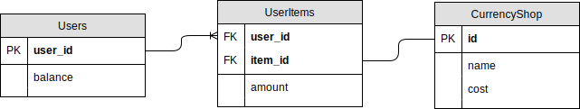

# Making a Currency System
A common feature of Discord bots is a currency system. It's possible to do everything in one object, but we can also abstract that in terms of relations between objects. This is where the power of a RDBMS (Relational Database Management System) truly shines. Sequelize calls these associations, so we'll be using that term from now on.
# File overview
There will be multiple files: a DB init script, your models, and your bot script. In the previous tutorial, we placed all of these in the same file. Having everything in one file is usually not how it's done in the real world, so we'll correct that.
This time we'll have 6 files.
app.jsis where we'll keep the main bot code.dbInit.jsis the initialization file for the database. We run this once and forget about it.dbObjects.jsis where we'll import the models and create associations here.models/Users.jsis the Users model. Users will have a currency attribute in here.models/CurrencyShop.jsis the Shop model. The shop will have a name and a price for each item.models/UserItems.jsis the junction table between the users and the shop. A junction table is used to connect two tables together. Our junction table will have an additional field for the amount of that item the user has.
# Create models
Here is an entity relation diagram of the models we'll be making:
Users have a user_id, and a balance. Each user_id can have multiple links to the UserItems table, and each entry in the table is connected to one of the items in the CurrencyShop, which will have a name and a cost associated with it.
To implement this, we'll begin by making a models folder and create a Users.js file inside which contains the following:
module.exports = (sequelize, DataTypes) => {
return sequelize.define('users', {
user_id: {
type: DataTypes.STRING,
primaryKey: true,
},
balance: {
type: DataTypes.INTEGER,
defaultValue: 0,
allowNull: false,
},
}, {
timestamps: false,
});
};
Like you see in the diagram above, our Users model will only have 2 attributes: a user_id primary key and a balance. A primary key is a special type of attribute that becomes the default column used when joining tables together. In addition, a primary key is automatically set as unique and not null.
Balance also sets allowNull to false. This, in conjunction with setting a primary key, means that both values have to be set, otherwise the database would throw an error. This means that we guarantee correctness in our data storage in that we never have null or empty values. This ensures that if we somehow forget to validate in the application that both values are not null, our database would do the final validation for us.
Notice that our options object sets timestamps to false. This disables the createdAt and the updatedAt columns that sequelize usually creates for you. Setting user_id to primary also gets rid of the id primary key that Sequelize usually generates for you, since there can only be one primary key on a table.
Next, still in the same models folder, create a CurrencyShop.js file that contains the following:
module.exports = (sequelize, DataTypes) => {
return sequelize.define('currency_shop', {
name: {
type: DataTypes.STRING,
unique: true,
},
cost: {
type: DataTypes.INTEGER,
allowNull: false,
},
}, {
timestamps: false,
});
};
Like our Users model, we don't need the timestamps here, so we'll disable it. Unlike the Users model however, we only set unique to true here. This is so that if you want to change the name of the item, you can change the name without affecting the primary key that joins this to the next object. This gets generated automatically by sequelize since we didn't set a primary key.
The next file will be UserItems.js, our junction table.
module.exports = (sequelize, DataTypes) => {
return sequelize.define('user_item', {
user_id: DataTypes.STRING,
item_id: DataTypes.STRING,
amount: {
type: DataTypes.INTEGER,
allowNull: false,
'default': 0,
},
}, {
timestamps: false,
});
};
Our junction table will link user_id and the id of the currency shop together. It also contains an amount number which indicates how many of that item a user has.
# Initialize database
Now that the models are defined, we should create them in our database so that we can access them in the bot file. We ran the sync in the ready event in our bot in the previous tutorial, which is completely unnecessary, since it only needs to run once. So what we can do is make a file to initialize the database and never touch it again unless we want to remake the entire database.
Create a file called dbInit.js in the base directory (not in the models folder).
WARNING
Make sure you use version 5 or later of Sequelize! Version 4 as used in this guide will pose a security threat. You can read more about this issue on the Sequelize issue tracker.
const Sequelize = require('sequelize');
const sequelize = new Sequelize('database', 'username', 'password', {
host: 'localhost',
dialect: 'sqlite',
logging: false,
storage: 'database.sqlite',
});
const CurrencyShop = require('./models/CurrencyShop')(sequelize, Sequelize.DataTypes);
require('./models/Users')(sequelize, Sequelize.DataTypes);
require('./models/UserItems')(sequelize, Sequelize.DataTypes);
const force = process.argv.includes('--force') || process.argv.includes('-f');
sequelize.sync({ force }).then(async () => {
const shop = [
CurrencyShop.upsert({ name: 'Tea', cost: 1 }),
CurrencyShop.upsert({ name: 'Coffee', cost: 2 }),
CurrencyShop.upsert({ name: 'Cake', cost: 5 }),
];
await Promise.all(shop);
console.log('Database synced');
sequelize.close();
}).catch(console.error);
Here we pull the two models and the junction table from the respective model declarations, sync them, and add items to our shop.
A new function here is the .upsert() function. It's a portmanteau for update or insert. We use upsert here because just in case you run this file multiple times, it doesn't create duplicates. That shouldn't happen because we defined name as unique but there's no harm in being safe. Upsert also has a nice side benefit; If you adjust the cost, the respective item should also have their cost updated.
TIP
Execute node dbInit.js to create the database tables. Unless you make a change to the models, you'll never need to touch the file again. If you do make a change to a model, you can execute node dbInit.js --force or node dbInit.js -f to force sync your tables. It's important to note that this will empty out and remake your model tables.
# Create associations
Next we'll add our associations to the models. Create a file named dbObjects.js in the base directory, next to dbInit.js.
const Sequelize = require('sequelize');
const sequelize = new Sequelize('database', 'username', 'password', {
host: 'localhost',
dialect: 'sqlite',
logging: false,
storage: 'database.sqlite',
});
const Users = require('./models/Users')(sequelize, Sequelize.DataTypes);
const CurrencyShop = require('./models/CurrencyShop')(sequelize, Sequelize.DataTypes);
const UserItems = require('./models/UserItems')(sequelize, Sequelize.DataTypes);
UserItems.belongsTo(CurrencyShop, { foreignKey: 'item_id', as: 'item' });
/* eslint-disable-next-line func-names */
Users.prototype.addItem = async function(item) {
const userItem = await UserItems.findOne({
where: { user_id: this.user_id, item_id: item.id },
});
if (userItem) {
userItem.amount += 1;
return userItem.save();
}
return UserItems.create({ user_id: this.user_id, item_id: item.id, amount: 1 });
};
/* eslint-disable-next-line func-names */
Users.prototype.getItems = function() {
return UserItems.findAll({
where: { user_id: this.user_id },
include: ['item'],
});
};
module.exports = { Users, CurrencyShop, UserItems };
Note that we could have abstracted the connection object in another file, and had both dbInit.js and dbObjects.js use that connection file, but it's not necessary to overly abstract things.
The new method we haven't seen yet is the .belongsTo() method. Using this method, we add CurrencyShop as a property of UserItem so that when we do userItem.item we get the respective item that it's attached to. We use item_id as the foreign key so that it knows which item to attach.
We now add some prototypes to the User object to finish up the junction: add items to users, and get their current inventory. The code inside should be somewhat familiar from the last tutorial. We use a .findOne() to get the item if it exists in the user's inventory. We increment if it does, or create it if it doesn't.
Getting items is similar, we just .findAll() using the user's id as the key. The include key is for associating the CurrencyShop with the item. We basically have to explicitly tell Sequelize to honor the .belongsTo() association, otherwise it will take the path of least effort.
# Application code
To put it together, we'll create an app.js in the base directory with the following skeleton code.
const Discord = require('discord.js');
const client = new Discord.Client();
const { Users, CurrencyShop } = require('./dbObjects');
const { Op } = require('sequelize');
const currency = new Discord.Collection();
const PREFIX = '!';
// [alpha]
client.once('ready', async () => {
// [beta]
console.log(`Logged in as ${client.user.tag}!`);
});
client.on('message', async message => {
if (message.author.bot) return;
currency.add(message.author.id, 1);
if (!message.content.startsWith(PREFIX)) return;
const input = message.content.slice(PREFIX.length).trim();
if (!input.length) return;
const [, command, commandArgs] = input.match(/(\w+)\s*([\s\S]*)/);
if (command === 'balance') {
// [gamma]
} else if (command === 'inventory') {
// [delta]
} else if (command === 'transfer') {
// [epsilon]
} else if (command === 'buy') {
// [zeta]
} else if (command === 'shop') {
// [theta]
} else if (command === 'leaderboard') {
// [lambda]
}
});
client.login('your-token-goes-here');
Nothing special about this skeleton. We import the Users and CurrencyShop models from our dbObjects.js file, and add a currency Collection. Every time someone talks, we add 1 to their currency count. The rest is just standard discord.js code and a simple if/else command handler. We're using the currency Collection in order to cache individual user's currency, so we don't have to hit the database for every lookup. I've used an if/else handler here, but you can put it in a framework or command handler as long as you maintain a reference to the models and the currency collection.
# [alpha] Helper methods
Reflect.defineProperty(currency, 'add', {
/* eslint-disable-next-line func-name-matching */
value: async function add(id, amount) {
const user = currency.get(id);
if (user) {
user.balance += Number(amount);
return user.save();
}
const newUser = await Users.create({ user_id: id, balance: amount });
currency.set(id, newUser);
return newUser;
},
});
Reflect.defineProperty(currency, 'getBalance', {
/* eslint-disable-next-line func-name-matching */
value: function getBalance(id) {
const user = currency.get(id);
return user ? user.balance : 0;
},
});
We're defining an .add() method to our currency collection. It'll be used quite frequently, so having a method for it makes our lives easier. We'll also add a .getBalance() method so that we'll always get a number.
# [beta] Ready event data sync
const storedBalances = await Users.findAll();
storedBalances.forEach(b => currency.set(b.user_id, b));
In our ready event, we want to sync our currency collection with the database for easy access later.
# [gamma] Show user balance
const target = message.mentions.users.first() || message.author;
return message.channel.send(`${target.tag} has ${currency.getBalance(target.id)}💰`);
Nothing tricky here. We use our .getBalance() method to show either the author's or the mentioned user's balance
# [delta] Show user inventory
const target = message.mentions.users.first() || message.author;
const user = await Users.findOne({ where: { user_id: target.id } });
const items = await user.getItems();
if (!items.length) return message.channel.send(`${target.tag} has nothing!`);
return message.channel.send(`${target.tag} currently has ${items.map(i => `${i.amount} ${i.item.name}`).join(', ')}`);
Here we begin to see the power of associations. Even though users and the shop are different tables, and the data is stored separately, we can get a user's inventory by looking at the junction table and join it with the shop. No duplicated item names that waste space!
# [epsilon] Transfer currency to another user
const currentAmount = currency.getBalance(message.author.id);
const transferAmount = commandArgs.split(/ +/g).find(arg => !/<@!?\d+>/g.test(arg));
const transferTarget = message.mentions.users.first();
if (!transferAmount || isNaN(transferAmount)) return message.channel.send(`Sorry ${message.author}, that's an invalid amount.`);
if (transferAmount > currentAmount) return message.channel.send(`Sorry ${message.author}, you only have ${currentAmount}.`);
if (transferAmount <= 0) return message.channel.send(`Please enter an amount greater than zero, ${message.author}.`);
currency.add(message.author.id, -transferAmount);
currency.add(transferTarget.id, transferAmount);
return message.channel.send(`Successfully transferred ${transferAmount}💰 to ${transferTarget.tag}. Your current balance is ${currency.getBalance(message.author.id)}💰`);
As a bot creator, you should always be thinking about how to make the user experience better. Good UX makes users less frustrated with your commands. If your input are different types, don't make them memorize which parameters come before the other.
We want to be able to allow users to do both !transfer 5 @user and !transfer @user 5. So what we're going to do is grab the first non-mention text in the command. In the second line of the above code, we split the command by spaces, and then we look for anything that doesn't match a mention, and we'll assume that's the transfer amount. Then we do some checking to make sure it's a valid input. You can also do error checking on the transfer target, but that's trivial, so it won't be included here.
We use .add() for both removing and adding currency. Since we already check if the transfer amount is below zero, it will be safe to apply the additive inverse of the transfer amount to their balance.
# [zeta] Buying an item
const item = await CurrencyShop.findOne({ where: { name: { [Op.like]: commandArgs } } });
if (!item) return message.channel.send(`That item doesn't exist.`);
if (item.cost > currency.getBalance(message.author.id)) {
return message.channel.send(`You currently have ${currency.getBalance(message.author.id)}, but the ${item.name} costs ${item.cost}!`);
}
const user = await Users.findOne({ where: { user_id: message.author.id } });
currency.add(message.author.id, -item.cost);
await user.addItem(item);
message.channel.send(`You've bought: ${item.name}.`);
In order for users to search for an item without having to care about case, we use the $iLike modifier when we're looking for the name. Keep in mind that this may be slow if you have millions of items, so please don't put a million items in your shop.
# [theta] Display the shop
const items = await CurrencyShop.findAll();
return message.channel.send(items.map(item => `${item.name}: ${item.cost}💰`).join('\n'), { code: true });
Nothing special here, just a regular .findAll() to get all the items in the shop, and .map() to transform that data into something nice looking.
# [lambda] Display the leaderboard
return message.channel.send(
currency.sort((a, b) => b.balance - a.balance)
.filter(user => client.users.cache.has(user.user_id))
.first(10)
.map((user, position) => `(${position + 1}) ${(client.users.cache.get(user.user_id).tag)}: ${user.balance}💰`)
.join('\n'),
{ code: true }
);
Nothing particularly special here either. We could have queried the database for the top 10 currency holders as well, but we already have access to them locally, so just sort the Collection we have and use map again to display in a nice format. The filter is in case the users no longer exist in the bot's cache.
# Resulting code
If you want to compare your code to the code we've constructed so far, you can review it over on the GitHub repository here .